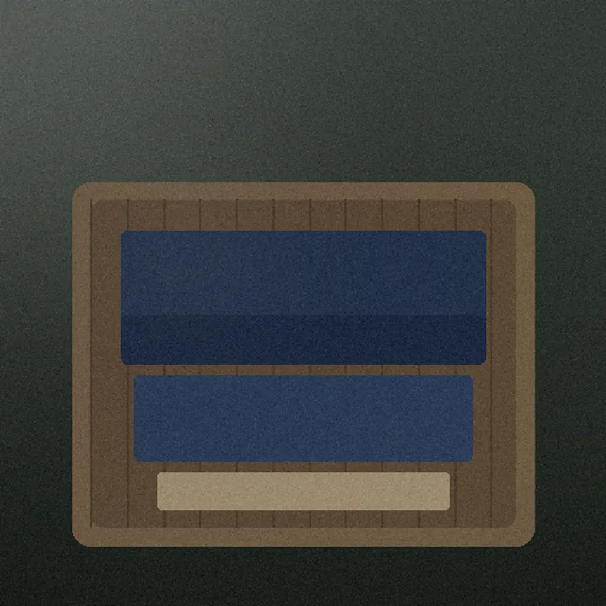

一日三組の、山あいの宿
夜が明けるまで、
ひとつの宿に。
画像はAI生成のイメージです
湯は、客室に。
三つの客室には、それぞれに湯が付いています。湯はどれも、その客室の一組だけのものです。

着いてから、
発つまで。
一泊の時間を、時刻の順に。
- 15:00
到着とお茶
チェックインは客室で。館内の案内は5分ほどです。
- 夕方
藍の浴衣
無地の藍の浴衣を二つの大きさから、帯は二色から。

- 18:00
夕食
18時か19時からを選べます。山の季節の献立を、小鉢で少しずつ客室へ。
- 夜通し
客室の湯
夜中でも明け方でも、好きな時間に何度でも。

- 7:00
朝の散歩
宿の裏から沢沿いの道へ、片道20分ほど。手描きの地図をお渡しします。
- 11:00
出発
チェックアウトの時刻です。支度は客室でゆっくりと。

朝がいちばん、
静かです。
苔の間から見る、
苔と石の中庭。
三つの客室。
朝の間
和室10畳
石の湯霧の間
和室12畳と縁側
石の湯苔の間
離れ
檜の湯
間取りと料金、別にかかるものは客室と料金のページに。
客室と料金を詳しく見る